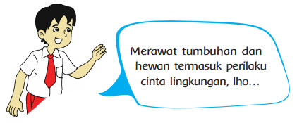
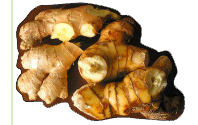
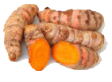
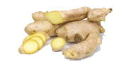
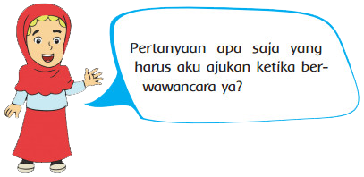
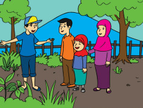
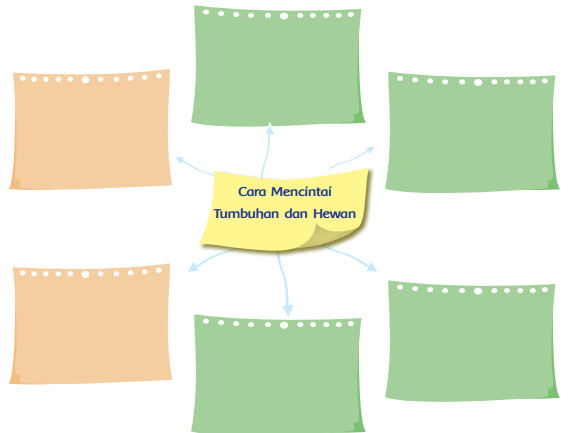

Pembelajaran 3
-

- Tahukah Kamu?
-
 Ayo Belajar
Ayo Belajar - Ayo Temukan
-
Ayo Belajar
- Ayo Diskusi
-
 Ayo Diskusi
Ayo Diskusi - Kerjasama dengan Orang Tua
Sudah beberapa bulan ini ibu Siti mengeluhkan tidak terawatnya lahan kosong di belakang rumahnya. Ia bingung karena tidak mengetahui apa yang harus dilakukan dengan lahan miliknya. Ayah Siti pun memberi ide untuk menanam tanaman di lahan kosong tersebut. Ibu Siti langsung tersenyum mendengar ide itu. Menurutmu, tanaman apa ya yang bisa ditanam di lahan kosong di rumah kita? Ayo kita cari tahu.
Lahan kosong yang tidak terawat membuat lingkungan
kita menjadi kurang sedap dipandang, apalagi jika lahan
itu kotor.
Pemanfaatan lahan kosong di pekarangan sekolah atau
rumah merupakan cara penghijauan sebagai wujud perilaku
peduli lingkungan.
Menanam tanaman pada lahan yang sudah
lama tak terawat akan menyegarkan kembali
lahan/tanah itu.
Salah satu cara menghijaukan lahan adalah
dengan menanam tumbuhan yang bermanfaat
bagi kita, misalnya tanaman obat, seperti
kencur, kunyit, dan jahe.

|
Kencur merupakan salah satu jenis tanaman obat. Kencur sangat mudah untuk ditanam, dengan permukaan tanah yang tidak terlalu kering dan tidak terlalu basah, dan cukup bisa terkena sinar matahari, maka tanaman kencur ini bisa hidup dengan mudah. Kencur memiliki banyak manfaat mengobati berbagai macam penyakit, seperti influenza pada bayi, masuk angin, sakit kepala, batuk, dan keseleo.
 |
Kunyit atau kunir
merupakan salah
satu jenis tanaman
rempah atau obat.
Kunyit atau kunir ini
biasanya dimanfaatkan
oleh masyarakat kita
sebagai bahan bumbu
dalam masakan,
namun ada juga yang
memanfaatkan buah
kunyit untuk kesehatan
diyakini mampu
mengobati berbagai
jenis penyakit.
Kunyit sangat baik
ditanam saat awal
musim hujan.
Penyinaran matahari yang cukup dan tanah yang gembur dapat menambah kesuburan.  |
Tanaman jahe telah lama
dikenal dan tumbuh
baik di negeri kita. Jahe
merupakan salah satu
rempah-rempah penting.
Tanah yang digunakan
untuk penanaman jahe
tidak boleh tergenang.
Jahe memiliki banyak
manfaat, antara lain
sebagai bumbu masak,
pemberi aroma dan rasa
pada makanan, dan juga
karena dapat memberi efek
rasa panas dalam perut.
Maka, jahe juga digunakan
sebagai bahan minuman
penghangat tubuh.
Selain itu jahe juga banyak
digunakan dalam industri
obat, minyak wangi, dan
jamu tradisional.  |
|
1. Tuliskan informasi penting yang kamu temukan dari bacaan tersebut! 2. Apa yang akan kamu lakukan jika kamu memiliki lahan kosong? Jelaskan! 3. Berdasarkan informasi tadi, hal baik apa yang bisa kamu terapkan dalam kehidupan sehari-hari? Jelaskan! |
||

Kumpulkan informasi tentang 4 cara merawat tumbuhan dan 4 cara merawat hewan.
Catat pada tabel berikut. Lakukan secara berkelompok. Tuliskan hasilnya secara individu.
|
Merawat Tumbuhan dan Hewan Siti mengingat pengalaman bersama teman-temannya ketika bertemu dengan Pak Jajak. Pak Jajak memiliki kebun dan peternakan. Siti pun mengajak ayah ibunya berkunjung kembali ke sana. Di kebun Pak Jajak, Siti menemukan beberapa tanaman obat, di antaranya lengkuas, lidah buaya, dan sirih. |
 |
| Di sana juga ada hewan ternak, yaitu sapi, kerbau, kambing, ayam, dan bebek. Mereka diajak berkeliling melihat tanaman dan hewan ternak. Siti juga melihat Pak Jajak menyirami tanamannya. Menurutnya hal tersebut sangat penting karena membantu kesuburan tanaman. Pak Jajak juga mengajak Siti melihat sapi-sapi sedang dimandikan. Siti gembira sekali dengan pengalamannya berkunjung ke kebun dan peternakan Pak Jajak. Ia ingin segera berbagi cerita tersebut bersama teman-temannya di sekolah. | |
Diskusikan dengan seorang temanmu contoh-contoh lain sikap mencintai lingkungan.
Tulislah hasil diskusimu pada peta pikiran di bawah ini!


• Tuliskan hal-hal yang telah kamu pelajari dari kegiatan hari ini.
• Manfaat apa yang kamu dapatkan dari pembelajaran hari ini?
• Mengapa kita harus merawat tumbuhan dan hewan?
• Bagaimana sikapmu terhadap makhluk hidup di sekitarmu?
• Bagaimana caramu mencintai lingkungan?

Berikan contoh sikap yang telah kamu lakukan dalam mencintai lingkungan rumah dan
sekolah. Diskusikan hal ini dengan orang tuamu!